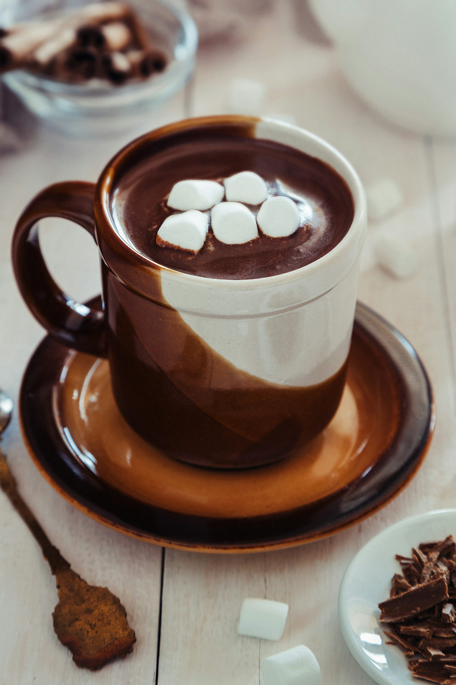

HOT CHOCOLATE

DESCRIPTION
This creamy hot chocolate is decadent enough to sip as-is.
You can take it up a notch with traditional toppings like marshmallows, homemade whipped cream, or a drizzle of chocolate sauce. For a festive twist and subtle minty flavor, garnish each mug of hot cocoa with a candy cane. Adults may appreciate a shot of Irish cream, amaretto, or peppermint vodka.
INGREDIENTS
- ¾ cup white sugar, or to taste
- ⅓ cup unsweetened cocoa powder
- 1 pinch salt
- ⅓ cup boiling water
- 3 ½ cups milk
- ¾ teaspoon vanilla extract
- ½ cup half-and-half cream
HOW TO MAKE HOT CHOCOLATE STEP-BY-STEP
- Gather the ingredients..
- Combine sugar, cocoa powder, and salt in a saucepan; add boiling water and whisk until smooth. Bring mixture to a simmer, stirring continuously to prevent scorching, and cook for 2 minutes.
- Stir in milk and heat until very hot without boiling.
- Remove from heat; add vanilla.
- Add cream to each mug to help cool cocoa to drinking temperature then divide hot cocoa between 4 mugs.
- Serve hot and enjoy!